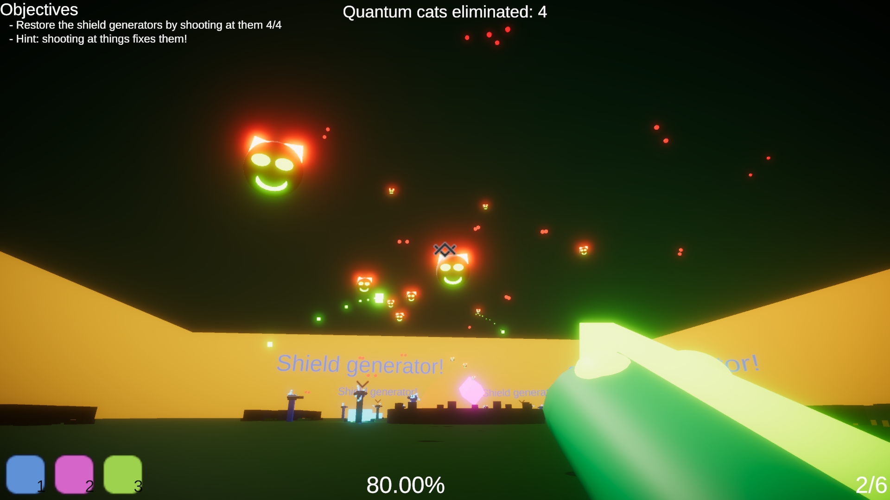

Game / Ludum Dare 48
The Quantum Menace
Recapture antivirus processors and fight off endless hordes of quantum cats.

About the game
The Quantum Cats are planning to invade our reality and have already taken control of our defenses. Can you recapture the antivirus processors and defeat the seemingly endless hordes of quantum cats?